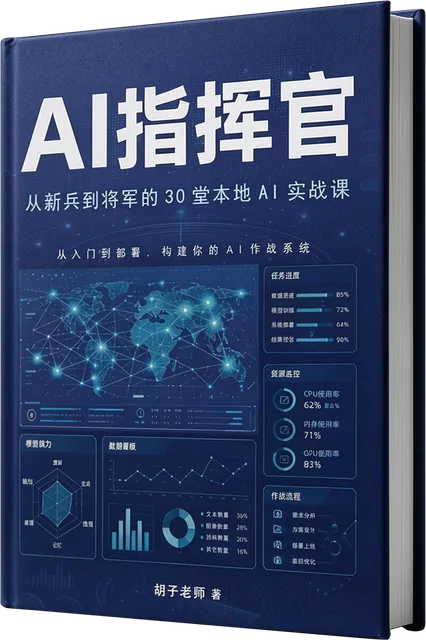

01 / 书籍生产研发完成 · 已用于本书实践
人工智能书籍出版系统
从内容组织到书稿编排，让AI参与书籍生产。
胡子老师独立研发完成，并用于《AI指挥官》的书籍生产实践。系统围绕内容创作与组织、书稿编排等工作，把人工智能应用到书籍生产过程。
- 适合关注
- 正在整理专业知识、筹备著作，或希望了解人工智能辅助书籍生产的作者与内容团队。
- 已有实践
- 《AI指挥官》已形成完整书稿，内容涵盖 8 篇 31 章与 9 项附录。
- 开放状态
- 对外开放范围待确定，具体使用与交付方式另行说明。
